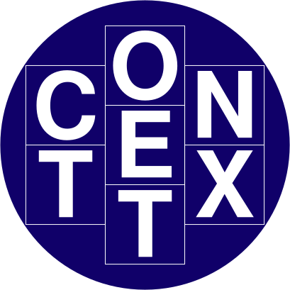

Taller de Python + IA para todos
¡Haz tu propio ChatGPT!
2025-04-02
¿Qué dicen los diarios de la IA?

SI presten atención al hombre tras la cortina
Idea
Toda tecnología suficientemente avanzada parece magia.
Arthur C. Clarke
Parte 1
La ilusión de la continuidad
Desafío
¿Qué contiene la siguiente cadena de bits?
00000000 00101010
00000000 00101010
Podría ser el número 42 escrito en binario…
00000000 00101010
Podría ser el carácter * en la convención ascii…
00000000 00101010 00000101 00000101 00000101 00000101
Podría ser parte de un número decimal, 0.4523 o \(\pi\)…
10000101 00100001 01000111 00001000 00101010 01000101 11111111 11001101 01000111 00000101 00000101 01110111
Podría ser parte de un archivo multimedia (video, imagen, audio, etc.)…
- TODO en el computador son bits
representación=bits+contexto

Alta fidelidad no es continuidad.
Alta fidelidad no es continuidad.
Alta fidelidad no es continuidad.
Alta fidelidad no es continuidad.
Alta fidelidad no es continuidad.

Alta fidelidad no es continuidad. Pero puede ser suficiente…
No necesitamos la realidad, necesitamos una buena aproximación. Suficiente para engañar a los sentidos.

Una película de 24 FPS es suficiente para engañar al ojo humano.
¿Qué aprendimos?
- Ninguna representación en el computador es perfecta.
- Los LLMs tampoco lo son… ¡y no tienen que serlo!
Parte 2
El computador parlanchín
¿Cómo representar una palabra?
Representación textual
Si solo queremos transcribir texto, basta con representar cada letra con una secuencia de bits, y almacenarla.
ASCII
- 1 byte (8 bits): 128 carácteres posibles
- 0 (48) … 9 (57)
- A (65) … Z (90)
- a (97) … z (122)
- Problema: Faltan muchos carácteres: Ñ, ñ, á, é, í, ó, ú, u
UTF-8
- 1 a 4 bytes (8 a 32 bits)
- Mantiene ASCII sin cambios
- Permite representar alfabetos latinos, griego, árabe, siríaco, thaana, y n’ko, además de caracteres chinos, japoneses y coreanos.
- Incluye emojis üòÅ, simbolos ✅ y mil cosas más üóø
Representación semántica
- Semántica significa el sentido o significado de las palabras.
- Necesitamos guardarla como un todo o dividirla en partes con sentido (tokens).

Actividad 2.1
- Actividad: Ir a https://platform.openai.com/tokenizer
- Objetivo: Evaluar distintos textos, en distintos idiomas.
Español: La informática,​ también llamada computación, es el área de la ciencia que se encarga de estudiar la administración de métodos, técnicas y procesos con el fin de almacenar, procesar y transmitir información y datos en formato digital.
Inglés: Computing is any goal-oriented activity requiring, benefiting from, or creating computing machinery. It includes the study and experimentation of algorithmic processes, and the development of both hardware and software. Computing has scientific, engineering, mathematical, technological, and social aspects.
üí° Aprendizajes
- Palabra ≠ Token
- Cada token tiene un ID único
- En inglés, 100 tokens ≈ 75 palabras
- Dos palabras iguales pueden tener tokens distintos, según el contexto
LLM = Large Language Model
Diagrama técnico de un LLM


Actividad 2.2
- Actividad: Ir a https://huggingface.co/spaces/alonsosilva/NextTokenPrediction
- Objetivo: Observar la lista de token que se muestran como posible continuación del texto.
üí° Aprendizajes
- El LLM no reflexiona, solo predice el token más probable.
- La predicción es secuencial, token por token.
- No tiene memoria: siempre parte desde cero.
El negocio de los LLMs
- Los LLMs tienen billones de parámetros.
- Se entrenan con textos masivos (internet, libros, etc.).
- Requieren mucho poder computacional (GPUs por horas).
El negocio de los LLMs
No existe solo chatGPT (OpenAI): todos quieren un pedazo de la torta:
Los de pago:
- GPT-4 (OpenAI)
- Gemini (Google)
- Claude (Anthropic)
- …
Los de código abierto:
- Llama (Meta)
- Qwen (Baidu)
- DeepSeek (China)
- …
Parte 3
¡Hazlo tu mismo!
Actividad 1
¿Cómo podemos emular chatGPT?
Ejecutar localmente LLM:
- Configuración compleja
- Hardware costoso
Consumir una API de LLM
- Simple y pago por uso
- Varias opciones y proveedores
- Actividad: Ir a https://cittripio.streamlit.app/v1
- Objetivo: Lograr que el bot responda “una pregunta”
- Tiempo: 5 minutos
- El LLM responde en función del prompt.
- El prompt puede pedir cualquier cosa.
- Prompts cortos entregan resultados muy variables.
Actividad 2
- Los LLMs no tienen personalidad propia, pero tú puedes definir cómo deben comportarse mediante el prompt.
- Esto se logra describiendo explícitamente el rol, el tono y el estilo que deseas que adopte el modelo.
- Actividad: Ir a https://cittripio.streamlit.app/vdos
- Objetivo:
- O1: Hacer 2 preguntas relacionadas.
- O2: Cambiar la personalidad del bot.
- Tiempo: 5 minutos
- Separar en contexto y pregunta permite imponer una “personalidad” o ciertas características.
- Un LLM no tiene memoria.
Actividad 3
¿Por qué chatGPT si tiene memoria?
Muy simple: Pasemosle la historia de la conversación en cada prompt.
- Opción 1: Pasarle todo el texto.
- Opción 2: Pasarle un resumen de la conversación.
¿Qué es la temperatura?
Es un parámetro que controla que tan aleatoria es la elección del siguiente token. - Temperatura = 0: Muy determinista. - Temperatura = 1: Muy aleatorio.
- Actividad: Ir a https://cittripio.streamlit.app/vf
- Objetivo:
- O1: Lograr que cittripio le responda a Luke Skywalker que es su padre.
- O2: Cambiar la personalidad de cittripio por cualquier otro personaje (no necesariamente de Star Wars).
- Tiempo: 5 minutos
- El LLM necesita tener como input todo el contexto e historia en el prompt.
- Las APIs agregan muchas opciones para simplificar y manejar todo esto convenientemente.
Parte 4
Conclusión
üöÄ Conclusi√≥n
✅ LLMs no son magia: es tecnología.
✅ Cualquiera puede comenzar a crear soluciones con LLMs.
✅ Conocer como funcionan LLMs permite usarlos mejor.
✅ Existen muchos recursos gratuitos para aprender y jugar.
üéâ ¡Gracias por Participar!
üîó Nuestro Sitio Web: seth-nut.github.io/resources